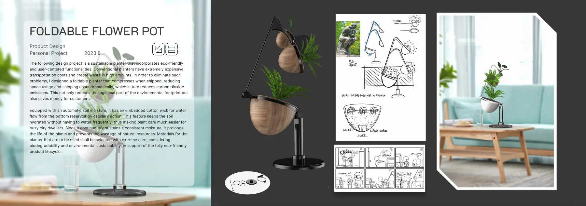

Brief
A planter that folds down to save space in shipping and storage, with a wick that draws water up to the soil from a reservoir below. I developed it through sketches, mechanism ideas and renderings. It's a concept, not a manufactured product.

